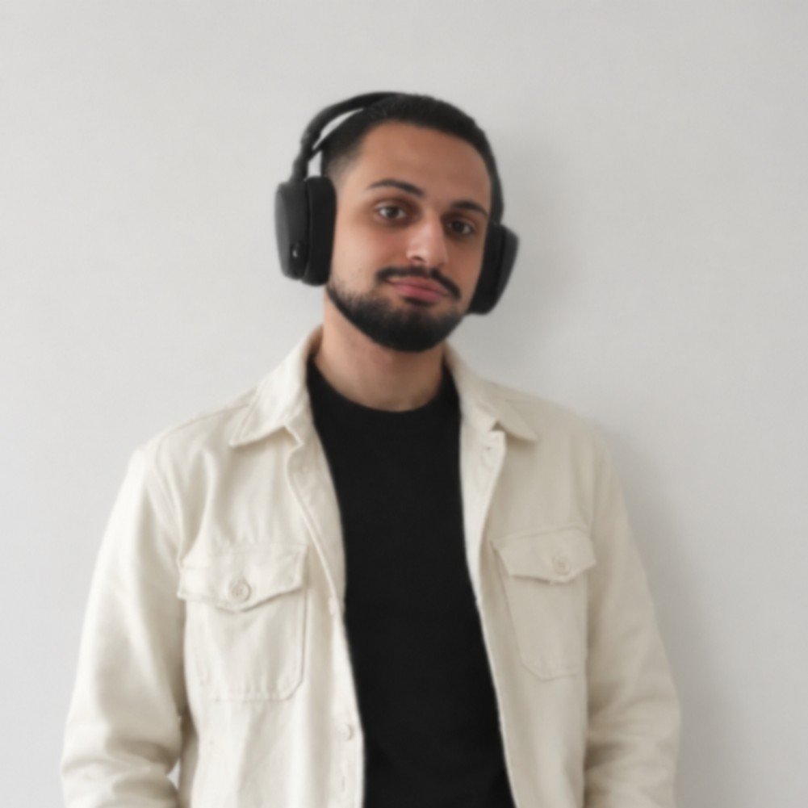
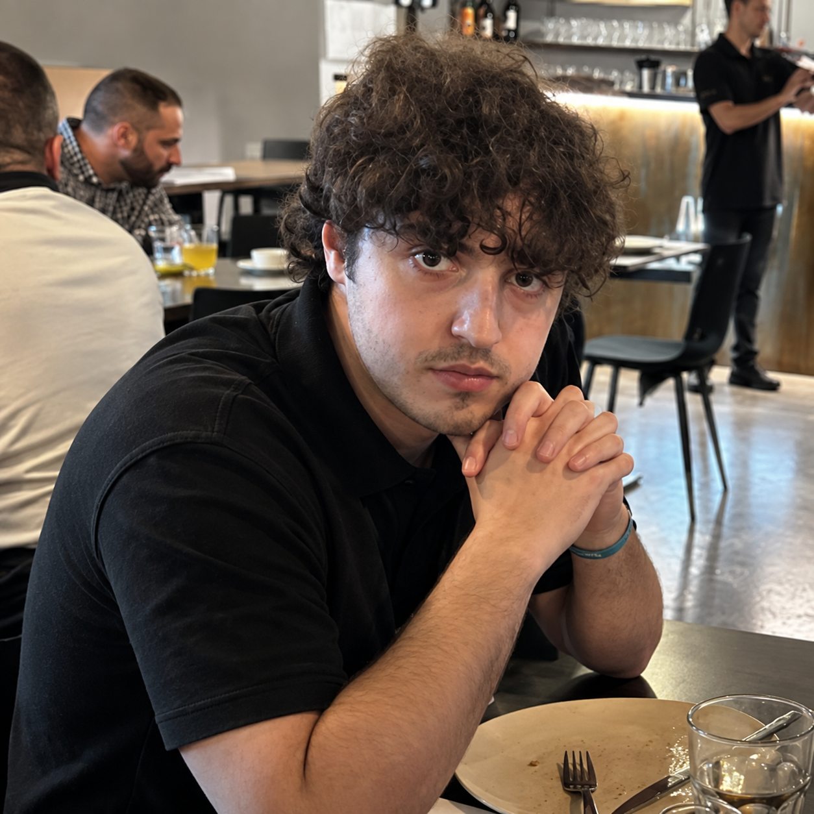
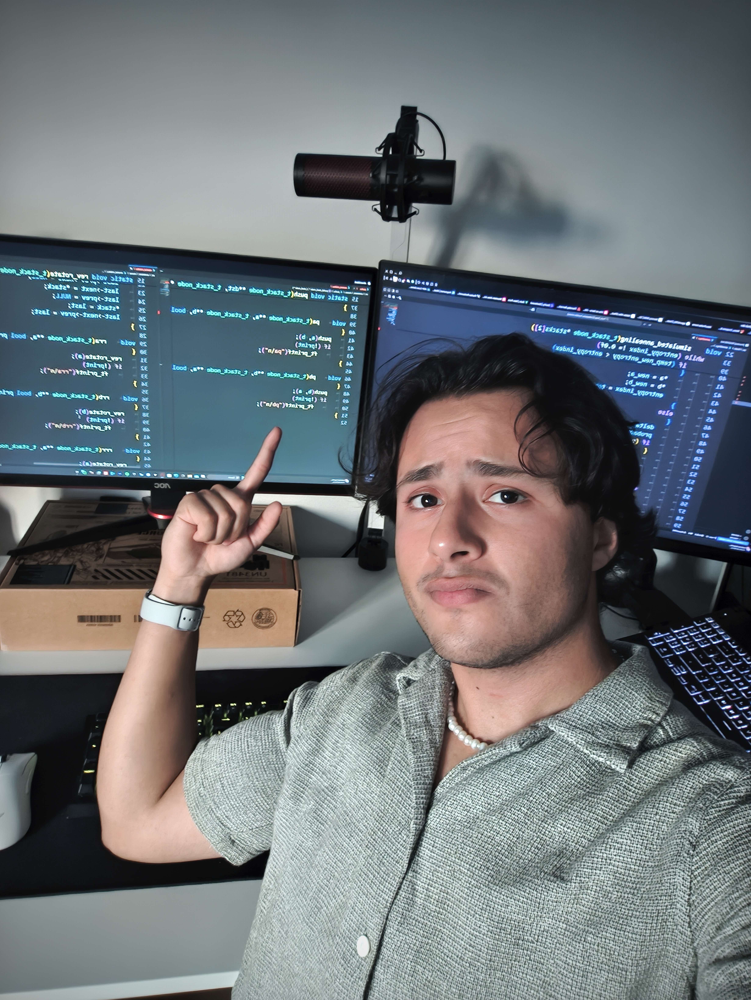

We are excited to share that ViVia Technologies will be attending Web Summit Lisbon this November. The event brings together founders, builders, investors, and curious minds from around the world, and it feels like the right place to talk about the kind of technology we want to help make: useful, accessible, and genuinely human.
Find us in Lisbon
Web Summit 2026 takes place from 9 to 12 November at MEO Arena and the surrounding venues in Parque das Nações. If you are attending and want to talk about digital products, safer systems, or an idea that deserves a clearer path forward, come and say hello.
We will be there to listen, exchange ideas, and meet people who care about turning technology into something people can actually use and trust. Follow our channels for meeting details and updates as the event gets closer.
The team attending



Technology becomes more useful when more people can take part in shaping what comes next.
Whether you are building something new, looking for a thoughtful technical partner, or simply want to compare notes about the future of digital work, we would love to meet you in Lisbon.